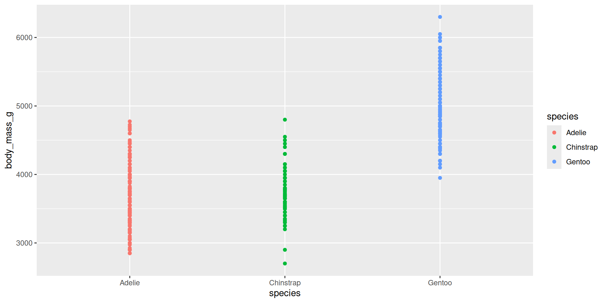
Data representation
Communicating with data
BIOL33031/BIOL65161
Communicating with data
What this session is about
Importance of story telling: Why being thoughtful about how to present data is important in understanding and communicating information.
Principles of data communication: Key ideas for making clear, accurate, and engaging plots and figures.
ggplot2 in action: Using R’s ggplot2 with the
palmerpenguinsdataset to create example plots (bar charts, histograms, boxplots, scatter plots).
Why visualize data?
Intuition and insight: Charts can reveal patterns, trends, and outliers at a glance that might be hidden in raw tables of numbers. A well-chosen plot can make relationships obvious and intuitive.
Tell a story: Visualizations help you communicate your findings. Rather than quoting statistics, a chart can convey the essence of your data (e.g. a trend or comparison) in an engaging way.
Explore and verify: Creating plots is also part of data exploration. It allows you to spot errors or anomalies and to check assumptions (e.g. whether data is skewed, or if groups differ significantly).
Engage your audience: Humans are highly visual. A clear graphic will often be remembered longer than a spreadsheet of figures, especially for audiences like stakeholders or peers less familiar with the raw data.
Our example dataset: The Palmer Penguins 🐧
We’ll use the Palmer Penguins dataset as a running example. This dataset contains measurements for 344 penguins from three species (Adélie, Chinstrap, Gentoo) collected by Dr. Kristen Gorman with the Palmer Station Long Term Ecological Research Program.
What’s in the data? For each penguin, we have variables like species, island (location), bill length & depth (mm), flipper length (mm), body mass (g), sex, and year. The data is in a tidy format (each row is one penguin, each column a variable).
Getting the data: The data is available in the
palmerpenguinsR package. Make sure you have it installed (install.packages("palmerpenguins")) and loaded (library(palmerpenguins)) so that thepenguinsdata frame is available for use.
Guidelines for effective plotting
Clarity and simplicity
When you design a plot, start with clarity. Make it easy to read and interpret: label axes (with units where relevant), include a concise legend when needed, and avoid jargon or busy wording. Choose an appropriate font size.
Strive for simplicity Avoid unnecessary ‘chart junk’ like background colours, gridlines, and false ‘3D’ effects.
Here are two different plots showing the raw penguin body mass data:
Unclear: points overlapping, background, distracting gridlines, small font, unformatted axis labels
Improved: points distinct, distractions removed, font size appropriate, human-readable axis labels
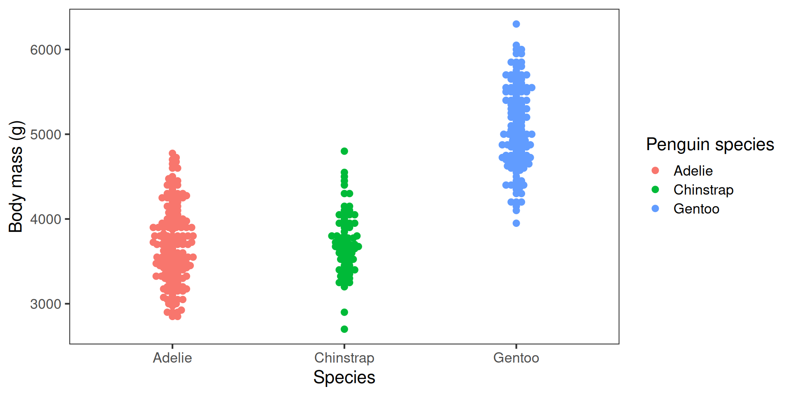
Accuracy
Aim for accuracy. Represent values honestly with appropriate scales—start bar charts at zero, keep axis intervals consistent, and avoid distortions like squashed or stretched aspect ratios.
Excluding zero from the y-axis can produce misleading insights:
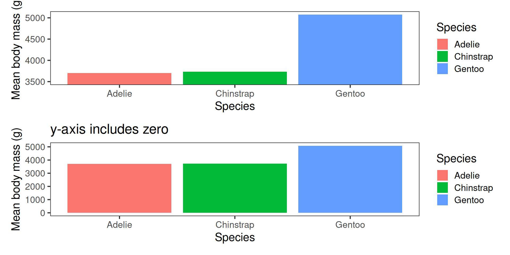

Choosing an appropriate plot type
Use bar charts for categorical comparisons, line plots for trends, scatter plots for relationships, boxplots, violin plots or histograms for distributions. Don’t use pie charts1.
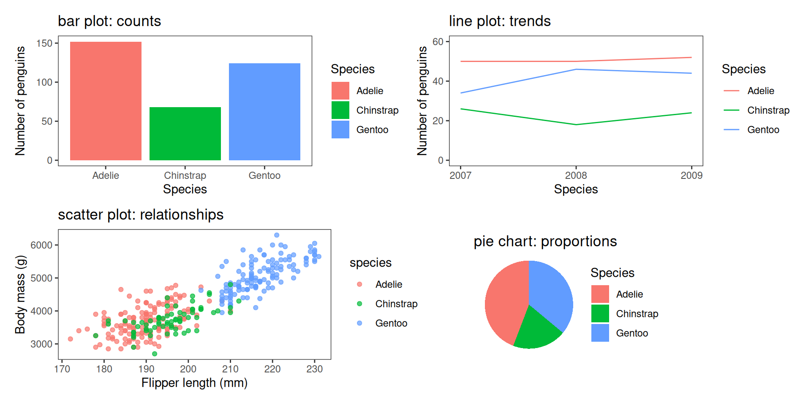
Choosing an appropriate plot type
Use bar charts for categorical comparisons, line plots for trends, scatter plots for relationships, boxplots, violin plots or histograms for distributions. Don’t use pie charts1.
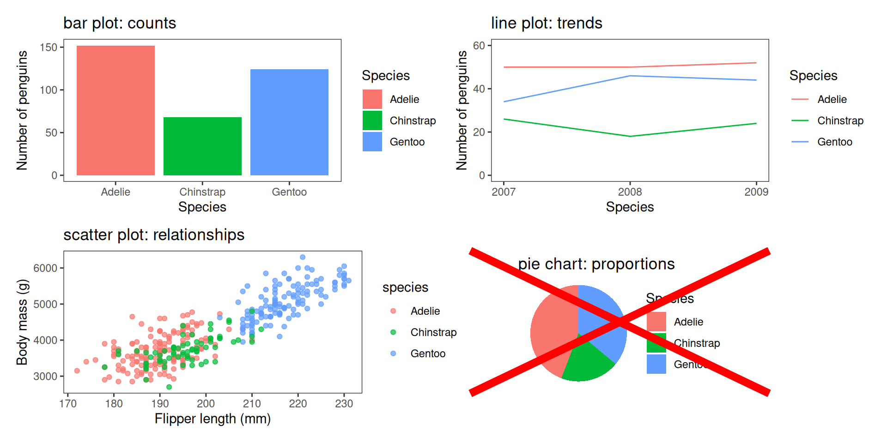
Choosing an appropriate plot type
Visualising the spread of data
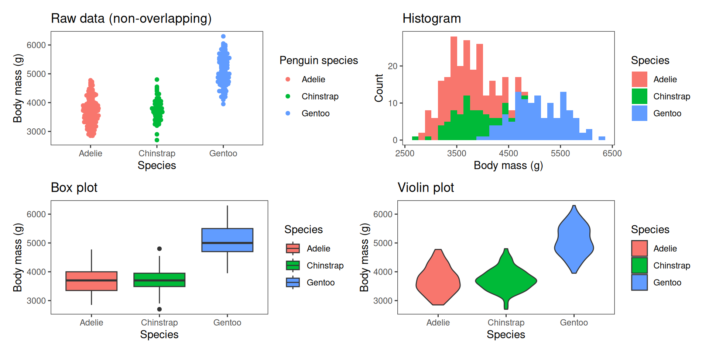
Colour, shapes, line-type
Use colour and aesthetics thoughtfully.
Colour can separate groups or highlight key points, but too many colours overwhelm.
Prefer colour-blind-friendly palettes (e.g. ggthemes, colorblindr, ggokabeito), and consider shapes or line types so the message survives without colour.
Default ggplot colours are not colour blind friendly
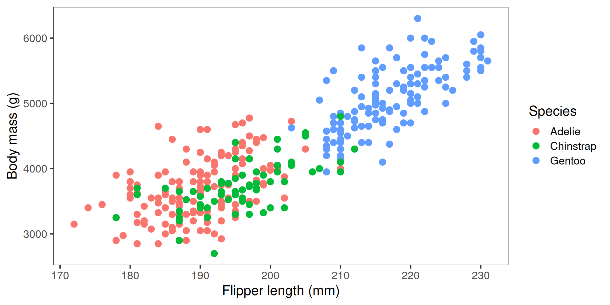
Colour-blind-friendly palette, shapes add redundancy
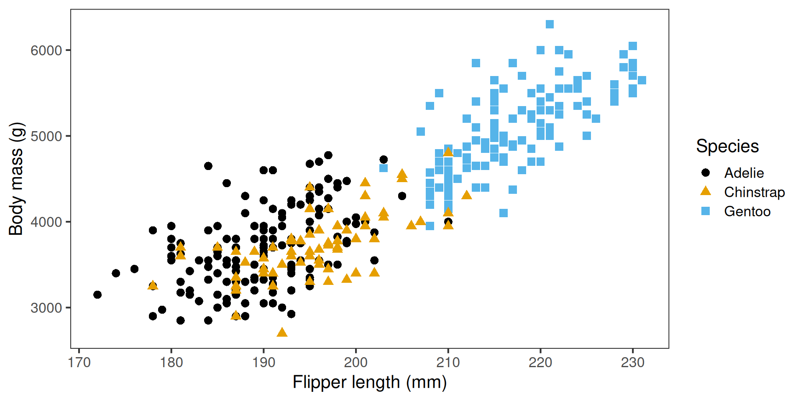
Consistency
Maintain consistency across figures: keeping the same colours and axis scales assists with clear and honest comparisons.
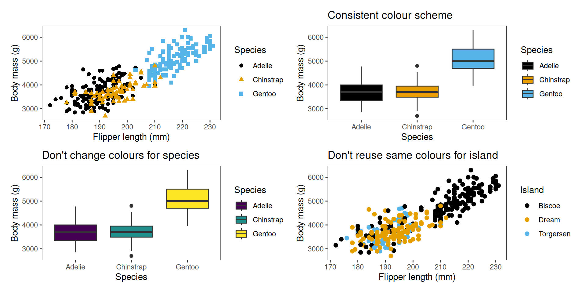
Identify the message
The most important consideration is the message—what information are you trying to convey? A figure is meant to express an idea or present results that would be too long or complex to explain only with words.
The key is to identify the message first: what do you want the audience to understand? That message should guide the design of the figure, just as it guides how you write text.
When a figure (or any representation) communicates its message clearly, it strengthens your article or presentation and helps your audience grasp the core idea quickly.
Inclusive data representation
Visualisations can be powerful, but they can exclude individuals with blindness or partial sight Some guidelines for accessibility1:
Accessible colours
Use colour-blind friendly palettes (e.g. Okabe–Ito) and/or high-contrast palettes, and never rely on colour alone — add shapes, line styles, or facets.Alt text and data verbalisation
Write clear descriptions of plots so screen readers can convey the message. TheBrailleRpackage aims to make R easier for users of screen readers.Data sonification
Turn data into sound (e.g.sonify, pitch fory-values, stereo forx-values). Helps reveal trends through listening.Data tactualisation
Convert plots into tactile graphics (e.g. embossers,tactileRpackage) so figures can be felt by touch.
How to plot using R and tidyverse
Base R graphics
R has graphics capabilities built in, but can be hard to customise. You may have used these if you’ve used R in the past:
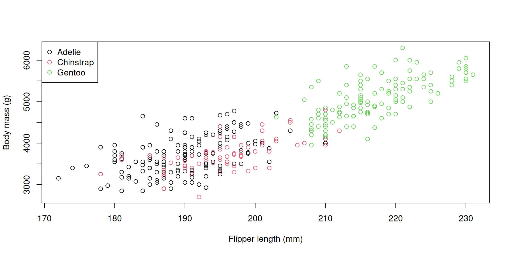
Introducing ggplot2
ggplot2 is a package written by Hadley Wickham that aims to simplify the production of plotting.One of the advantages of this approach is that you can build up plots in a step-wise, layer by layer approach using a set of consistent functions–a more flexible approach than the base plotting functions.
It’s also easy-ish to learn, and makes nice plot by default, handling things like legends and labels.
Crucially, the approach to plotting integrates well with the tidy data concept, and feeds naturally into the analyses we will do later.
ggplot21 is part of the tidyverse.
It lets you build plots by adding layers.
This is more flexible and consistent than using lots of special-case functions.
It’s easy to learn: the same small set of rules works everywhere.
It also makes nice plots by default, handling things like legends and labels automatically.
Because plots are built in layers, the process mirrors how we analyse data.
This makes it easier to go from raw data to a clear message.
Anatomy of a ggplot
ggplot uses the grammar of graphics. A ggplot has layers, built step by step:

- the
datalayer: our familiar Palmerpenguinsdataset. - the aesthetics
aes():
a function that maps variables to axes or visual properties (x,y,colour) geom_x: how to display data (e.g._point,_bar,_boxplot,_line,_histogram, etc.)labs: control what appears on the axis labels, legends, etc.
Producing different plots in ggplot
Let’s have a look at how we produce some of the different plot types in ggplot
Scatter plot: geom_point()
A scatter plot is useful for showing the relationship between two variables. Here, flipper length and body length are positively associated.


Producing different plots in ggplot
Bar plot: geom_bar()
A bar plot is ideal for showing counts of categories. Each bar’s height represents the number of observations in that category.
Producing different plots in ggplot
Line plot: geom_line()
A line plot is useful for showing trends over time. Here, the plot shows that the number of penguins of each species is relatively constant over time.
Producing different plots in ggplot
Boxplot: geom_boxplot()
A box plot is a classic way of showing the spread of data, including the interquartile range (the upper and lower edges of each box), the median (thick line in the middle), the range of the data (whiskers; excluding outliers) and any outlier points.
Producing different plots in ggplot
Histogram: geom_histogram()
Histograms are useful for representing the spread of data–its distribution. This plot shows that the Gentoos are the largest species on average, but there is overlap between the three species’ sizes.
Producing different plots in ggplot
Violin plot: geom_violin()
A violin plot is sort of like a combination of a box plot and a histogram turned on its side.
Producing different plots in ggplot
Raw data beeswarm plot: geom_beeswarm():
A beeswarm plot is a relatively new way of representing raw data while minimising points that sit on top of each other.
Customising plot appearance
ggplot defaults don’t meet some of our effective plotting guidelines, mostly through “chart junk” and colour schemes. But we can easily change these
flippers_vs_mass # Original plot
library(ggthemes) # For colourblind palette
flippers_vs_mass <-flippers_vs_mass +
scale_color_colorblind() + # Add colour-blind friendly colour scale
theme_bw(base_size = 16) + # Change plot theme and font size
theme(panel.grid = element_blank()) # Turn off the grid
flippers_vs_mass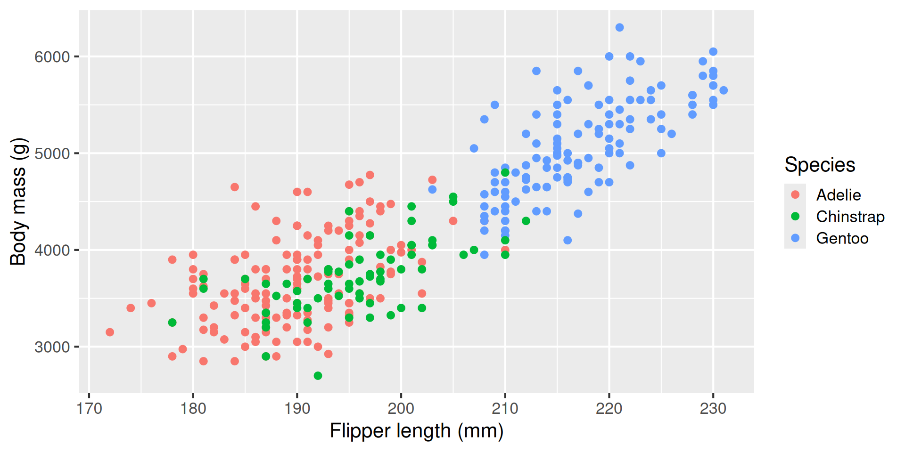
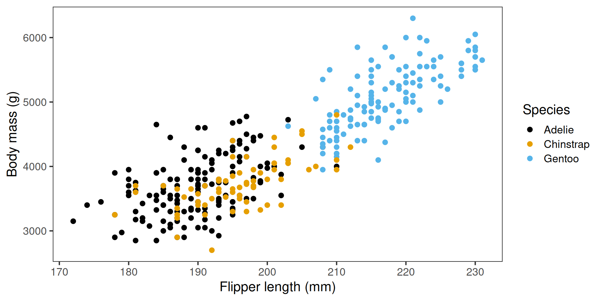
Comparing groups with facets
Sometimes we want to show the same relationship across different subsets of the data —
for example, how the link between flipper length and body mass varies by island.
We can use facets to create small multiples of the same plot.
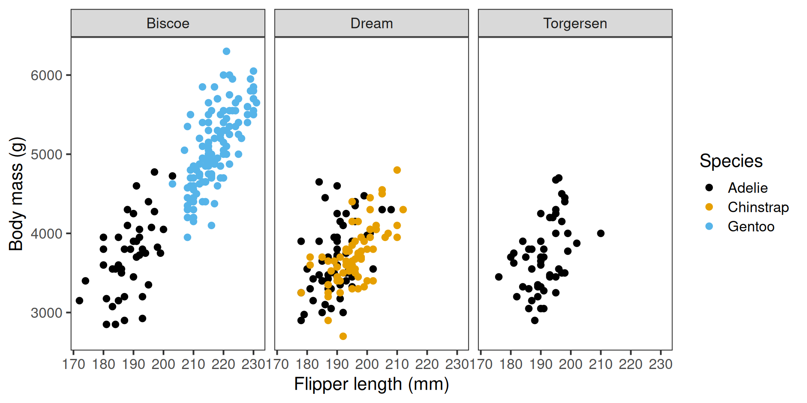
Recap & next steps
- Thoughtful data representation helps us understand and communicate biological patterns.
- Clear, accurate, and consistent figures make your message easier to grasp.
ggplot2lets us build plots in layers for flexibility and reproducibility.
- Accessible design — good colour choices, alt text, and clear labelling — improves communication for everyone.
You are now ready to tackle the hands-on workshop content, which will cover data handling, summarisation, and visualisation.